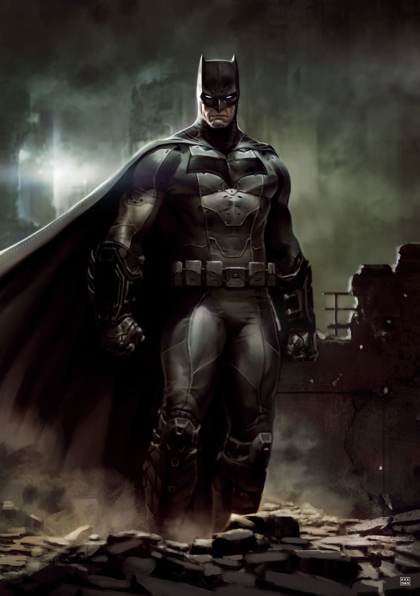
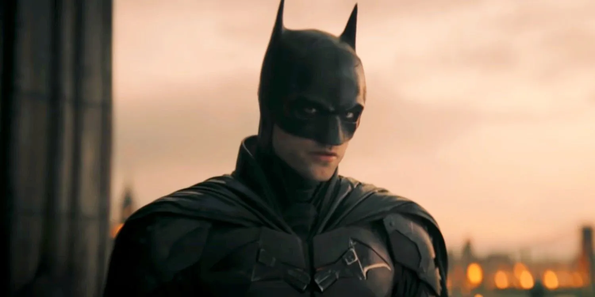
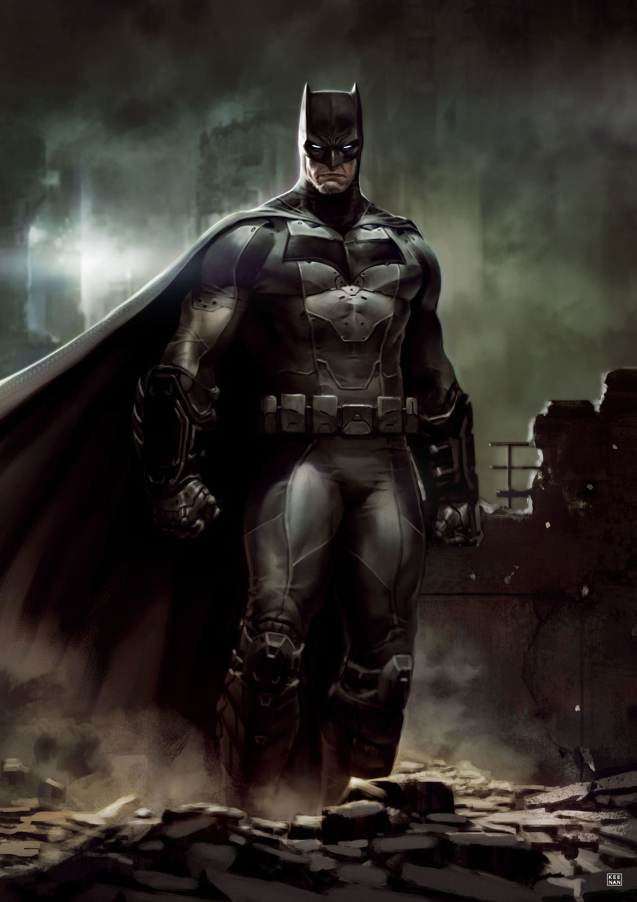
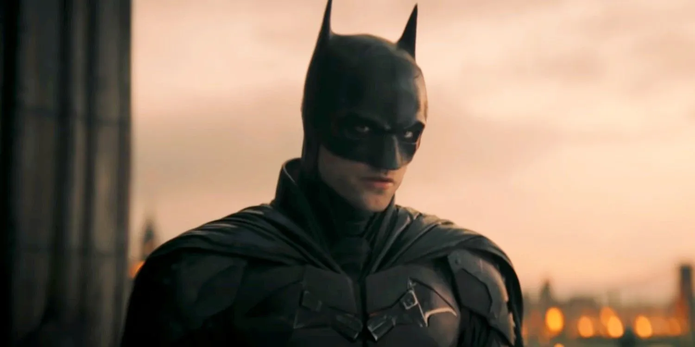

Batman[a] is a superhero appearing in American comic books published by DC Comics. The character was created by artist Bob Kane and writer Bill Finger, and debuted in the 27th issue of the comic book Detective Comics on March 30, 1939. In the DC Universe continuity, Batman is the alias of Bruce Wayne, a wealthy American playboy, philanthropist, and industrialist who resides in Gotham City. Batman's origin story features him swearing vengeance against criminals after witnessing the murder of his parents Thomas and Martha as a child, a vendetta tempered with the ideal of justice. He trains himself physically and intellectually, crafts a bat-inspired persona, and monitors the Gotham streets at night. Kane, Finger, and other creators accompanied Batman with supporting characters, including his sidekicks Robin and Batgirl; allies Alfred Pennyworth, James Gordon, and Catwoman; and foes such as the Penguin, the Riddler, Two-Face, and his archenemy, the Joker. Kane conceived Batman in early 1939 to capitalize on the popularity of DC's Superman; although Kane frequently claimed sole creation credit, Finger substantially developed the concept from a generic superhero into something more bat-like. The character received his own spin-off publication, Batman, in 1940. Batman was originally introduced as a ruthless vigilante who frequently killed or maimed criminals, but evolved into a character with a stringent moral code and strong sense of justice. Unlike most superheroes, Batman does not possess any superpowers, instead relying on his intellect, fighting skills, and wealth. The 1960s Batman television series used a camp aesthetic, which continued to be associated with the character for years after the show ended. Various creators worked to return the character to his darker roots in the 1970s and 1980s, culminating with the 1986 miniseries The Dark Knight Returns by Frank Miller.
Kane signed away ownership in the character in exchange for, among other compensation, a mandatory byline on all Batman comics. This byline did not originally say "Batman created by Bob Kane"; his name was simply written on the title page of each story. The name disappeared from the comic book in the mid-1960s, replaced by credits for each story's actual writer and artists. In the late 1970s, when Jerry Siegel and Joe Shuster began receiving a "created by" credit on the Superman titles, along with William Moulton Marston being given the byline for creating Wonder Woman, Batman stories began saying "Created by Bob Kane" in addition to the other credits. Finger did not receive the same recognition. While he had received credit for other DC work since the 1940s, he began, in the 1960s, to receive limited acknowledgment for his Batman writing; in the letters page of Batman #169 (February 1965) for example, editor Julius Schwartz names him as the creator of the Riddler, one of Batman's recurring villains. However, Finger's contract left him only with his writing page rate and no byline. Kane wrote, "Bill was disheartened by the lack of major accomplishments in his career. He felt that he had not used his creative potential to its fullest and that success had passed him by."[13] At the time of Finger's death in 1974, DC had not officially credited Finger as Batman co-creator. Jerry Robinson, who also worked with Finger and Kane on the strip at this time, has criticized Kane for failing to share the credit. He recalled Finger resenting his position, stating in a 2005 interview with The Comics Journal: Bob made him more insecure, because while he slaved working on Batman, he wasn't sharing in any of the glory or the money that Bob began to make, which is why ...[he was] going to leave [Kane's employ]. ...[Kane] should have credited Bill as co-creator, because I know; I was there. ...That was one thing I would never forgive Bob for, was not to take care of Bill or recognize his vital role in the creation of Batman. As with Siegel and Shuster, it should have been the same, the same co-creator credit in the strip, writer, and artist.[18] Although Kane initially rebutted Finger's claims at having created the character, writing in a 1965 open letter to fans that "it seemed to me that Bill Finger has given out the impression that he and not myself created the ''Batman, t' [sic] as well as Robin and all the other leading villains and characters. This statement is fraudulent and entirely untrue." Kane himself also commented on Finger's lack of credit. "The trouble with being a 'ghost' writer or artist is that you must remain rather anonymously without 'credit'. However, if one wants the 'credit', then one has to cease being a 'ghost' or follower and become a leader or innovator."[19] In 1989, Kane revisited Finger's situation, recalling in an interview: In those days it was like, one artist and he had his name over it [the comic strip] — the policy of DC in the comic books was, if you can't write it, obtain other writers, but their names would never appear on the comic book in the finished version. So Bill never asked me for it [the byline] and I never volunteered — I guess my ego at that time. And I felt badly, really, when he [Finger] died.[20] In September 2015, DC Entertainment revealed that Finger would be receiving credit for his role in Batman's creation on the 2016 superhero film Batman v Superman: Dawn of Justice and the second season of Gotham after a deal was worked out between the Finger family and DC.[2] Finger received credit as a creator of Batman for the first time in a comic in October 2015 with Batman and Robin Eternal #3 and Batman: Arkham Knight Genesis #3. The updated acknowledgment for the character appeared as "Batman created by Bob Kane with Bill Finger".[3]